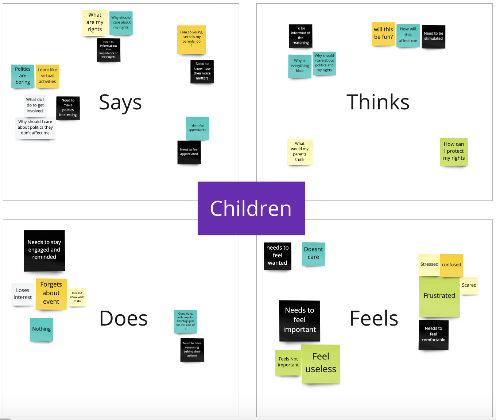
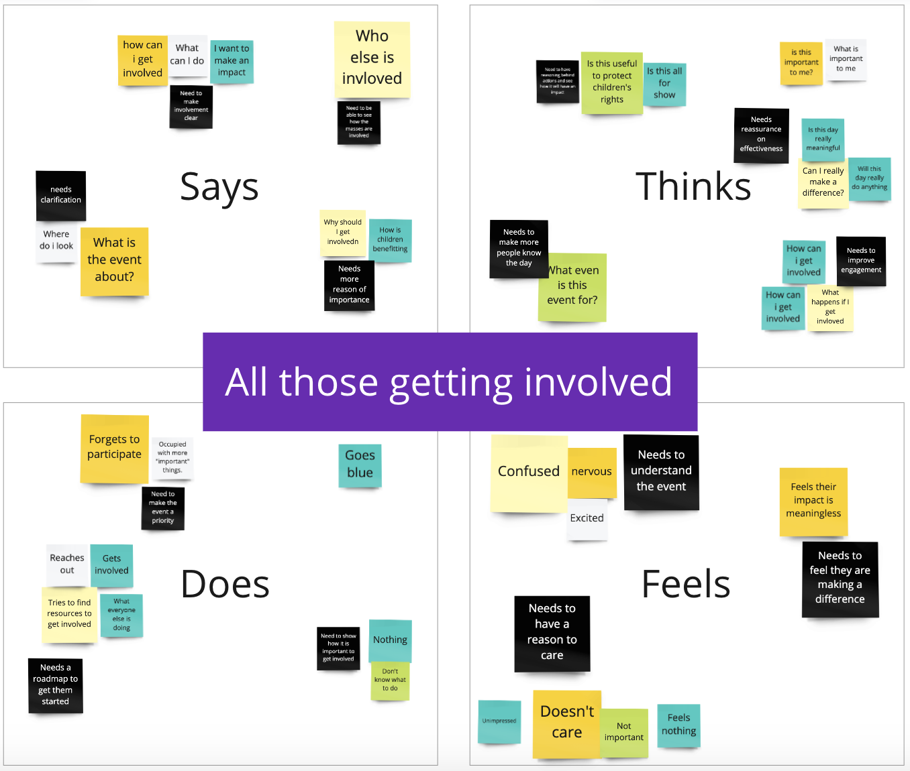
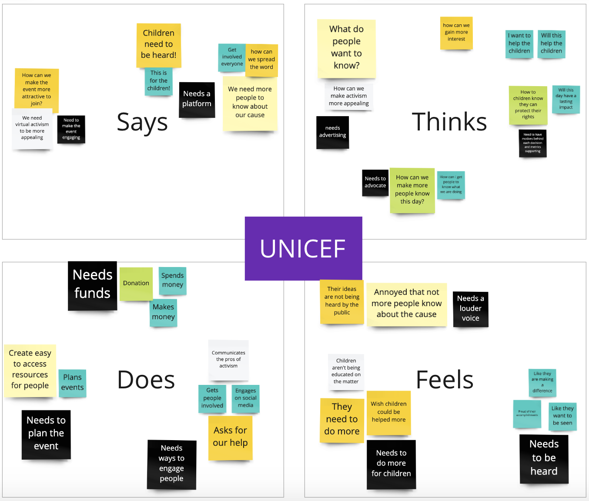

| Timeline | Teams | Clients | My Role |
|---|---|---|---|
| Starts: February 22, 2021 | Ali Popal | UNICEF Canada | UX designer |
| Ends: April 5, 2021 | Carlos Fernandez Mac Gregor | Overlap | UX researcher |
| Christina Lucas | |||
| Elise VanderWindt | |||
| Nates Lavrisa | |||
| Yufei Zhao (me) |
UNICEF is the short form of “United Nations Children’s Fund.” November 20th is National Child Day in Canada. It is also World Children's Day, championed by UNICEF to mark the date in 1989.
Our project is an online event for National Day of the Child that discusses child rights and increase awareness, engagement, and action.
We first did some secondary research such as what is UNICEF, U Report, children rights, Day of the Child, etc. Then we shared our research and had a group meeting with our clients to determine their needs and goals.
We created three empathy maps and a value proposition canvas. These three empathy maps are from the children side, the UNICEF side and all involved side. These can help us have a better understanding of our users.
  
Then we conducted 6 interviews with young adults, teachers, youth pastors, and parents. We focussed on interviewing those who deal with kids regularly to get the most relevant information. Our interviewees provided us with great insights about what gets children excited and how to get them involved.
We started to brainstorm ideas. We made an affinity map to group ideas. After narrowing down our ideas, we sorted them into the 5E Experience Design Model. These 5 “E”s are excitement, entry, engagement, exit, and extension. This led us to the idea of creating an online event structured like a video game. There will be avatars, challenges, rewards, and a cause worth fighting for! We then made a journey map of the process that mapped out the actions, touchpoints, customer thoughts, customer feelings, process ownership, and opportunities. We researched and tested multiple online platforms to host the event. We decided on Gather Town because of its variety of features and simplicity of use.
Value Proposition Canvas
5E Design Model
Journey Map
Affinity Map
During the prototyping phase, we created 6 story maps. One for the entire event, and one for each section of the event. We then conducted 12 ‘user tests with our story maps. A few main insights were that people would be more willing to go to the event if someone they trusted told them about it. Multiple people expressed that a YouTube or Facebook ad alone would not be enough to get them to sign up. Another insight was that delivering prize boxes to everyone’s homes was impractical, expensive, and unnecessary. We decided to change the prizes to a few digital gift cards instead.
One participant brought up the issue of safety during the event, they were concerned that there could be bullying or inappropriate behavior happening during the event. This is a challenge that we would still need to address in the future.
Throughout the process, there were some challenges...
| COVID Restrictions | Legal Restrictions |
|---|---|
| Children might not want to get involved in the event if it is on Saturday and constrained within COVID restriction. | The challenge our group faced during the project is we cannot interview children directly because of legal restrictions. |
These challenges forced us to think outside the box and come up with a novel and exciting solution. The execution of this event could have a huge impact on how children view and advocate their rights due to the interactivity and enjoyable nature of the event. This solution’s practicality allows it to be implemented this coming November for the national day of the child. Imagining a better future for kids all over Canada doesn’t have to be so far-fetched when we bring youth together and give them the tools to pave the way to a better and brighter future. This starts with awareness, engagement, action, and the Youth Advocacy Event!